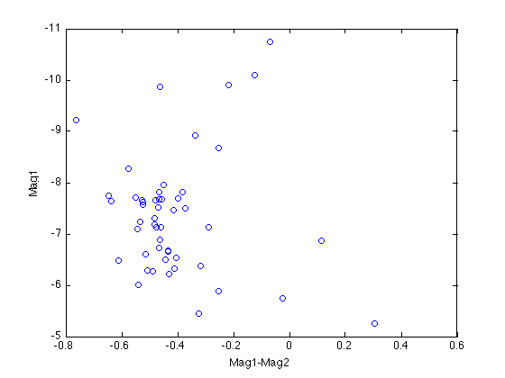
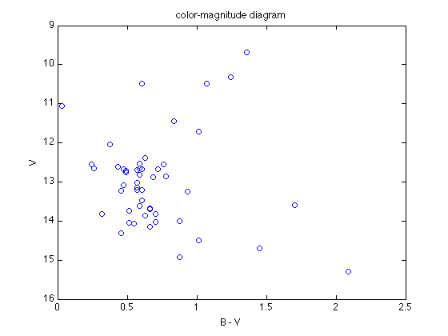
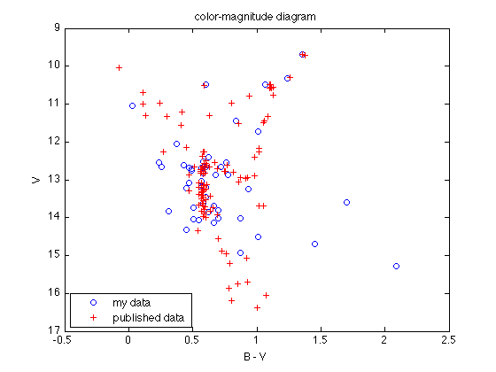

Making color-magnitude diagram
Assuming that you have properly done the flux measurement for each star in the central and eastern images in both R-band and V-band. Now you can use pmerge to create two lists of stars in R-band and V-band:
figure(1);clf; imagesc(rcbf); figure(2);clf; imagesc(rebf); figure(1); [cen1, cen2] = ginput(1); figure(2); [east1, east2] = ginput(1); pmerge('rmerge.pht','reast.out',[east1, east2],'rcen.out',[cen1, cen2]);
Found 21 duplicated sources valid in both files Found 33 valid sources unique to reast.out Found 25 valid sources unique to rcen.out
figure(1);clf; imagesc(vcbf); figure(2);clf; imagesc(vebf); figure(1); [cen1, cen2] = ginput(1); figure(2); [east1, east2] = ginput(1); pmerge('vmerge.pht','veast.out',[east1, east2],'vcen.out',[cen1, cen2]);
Found 29 duplicated sources valid in both files Found 42 valid sources unique to veast.out Found 22 valid sources unique to vcen.out
Now you can use scolor to calculate the V and R magnitudes and make a color-magnitude diagram (still need to be corrected!):
figure(1);clf; imagesc(vebf); figure(2);clf; imagesc(rebf); figure(1); [ve1, ve2] = ginput(1); figure(2); [re1, re2] = ginput(1); scolor('vrfile.col','vmerge.pht',[ve1, ve2],'rmerge.pht',[re1, re2])
Found valid colors for 51 sources
Don't forget to find the parameters a, b, c, d to convert your trivial V and R magnitude to real B-V and V magnitude:
p = load('vrfile.col');
BmV = a*p(:,5)+b;
V = p(:,3)+c*p(:,5)+d;
And let's make the H-R diagram!
plot(BmV, V, 'bo'); set(gca, 'YDir','Reverse') title('color-magnitude diagram'); xlabel('B - V'); ylabel('V');
You can also compare your result with the published data to see if your flux measurement is good:
hold on data = load('m67.txt'); plot(data(:,1), data(:,2), 'r+') legend('my data', 'published data', 'Location', 'SouthWest');